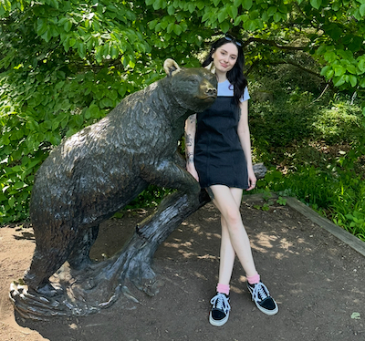

About the Authors
Sam Richter
Sam is a graduate student pursuing her Masters in Library and Information Studies at the University of Wisconsin-Madison. Before coming to the iSchool, Sam attended law school at the University of Richmond. After graduating from law school, she started working as a law librarian at an AM Law 200 firm in Richmond, Virginia.
While not very involved in the tech community, Sam has to deal with tech regularly for work. LIS500: Code and Power seemed like a great class to take because she wanted to learn more about coding and is also always looking for opportunities to increase her knowledge of how systems in place affect power dynamics.
When not working or studying, Sam spends time cooking, rock climbing, and hanging out with her boyfriend and two pets, Persephone (cat) and Winston (dog). However, Sam’s favorite pastime is reading. She enjoys classics and literary fiction. Her favorite book is Abigail by Magda Szabo, but a close second is Bram Stoker’s Dracula.
Mike Shonty
Mike Shonty works as a lead UX designer at an electronic health records company and is currently pursuing his Masters in Information at the University of Wisconsin - Madison iSchool. Born in Connecticut and raised in Florida, he currently resides in Minnesota with his wife where he is at the beck and call of his three cats.
Mike’s design work is primarily on applications used in reporting for the Centers for Medicare and Medicaid Services Quality Payment Program. This has helped him start to become aware of the disparities in healthcare. His reason for LIS500: Code and Power is driven by his desire to better serve the communities his design work impacts, by broadening his perspectives on both technology and society.
Outside of work his interests include fishing, video games, bad movies, and tabletop gaming. He’s greatly looking forward to the release of Monster Hunter Wilds, a game in a series he’s been playing with his wife since 2010.